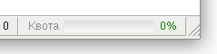
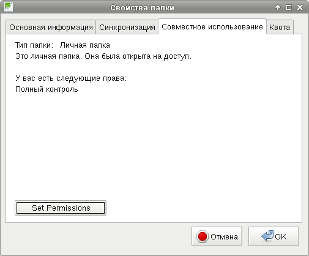
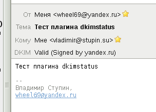
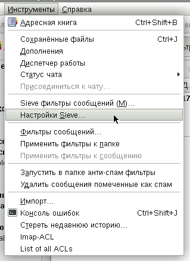
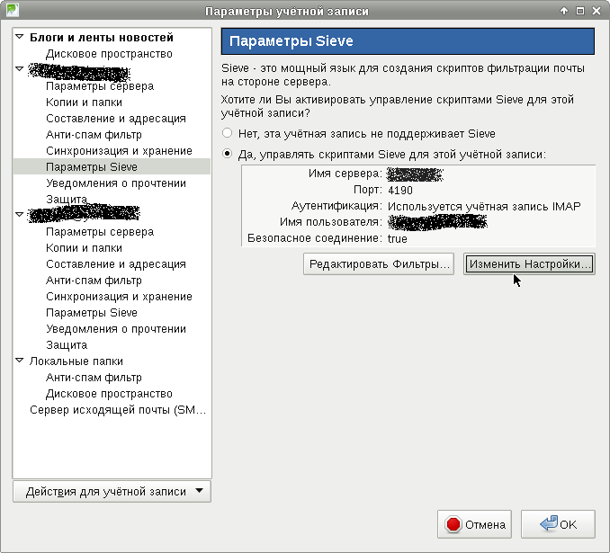
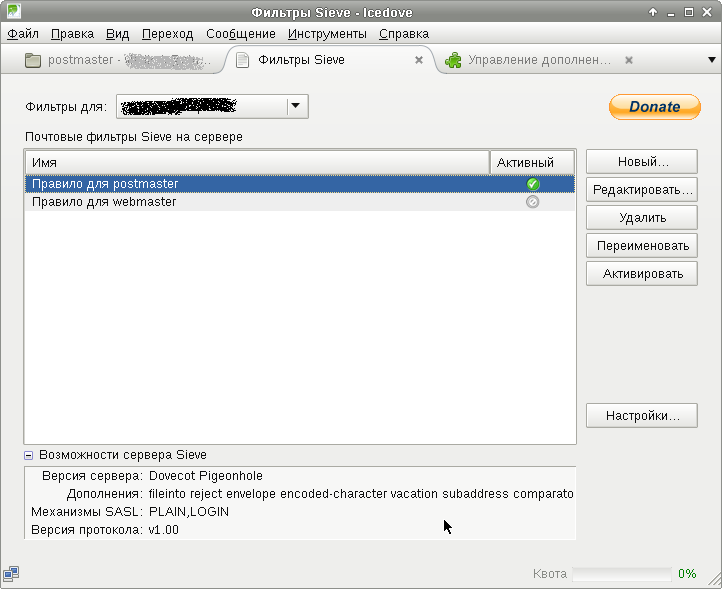
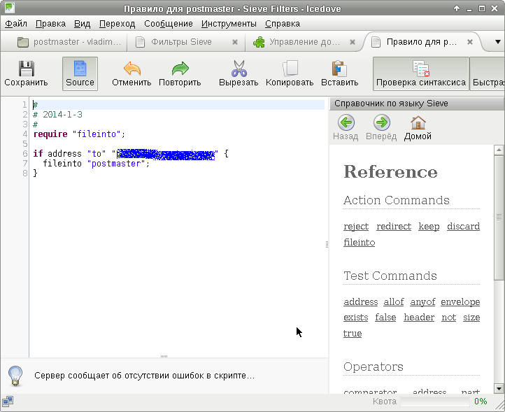
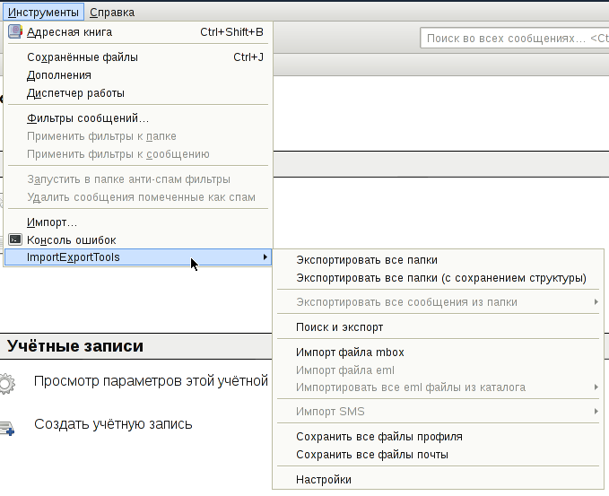
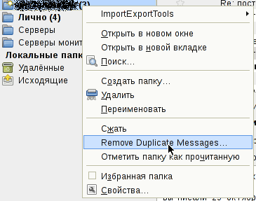

Настройка серверной части почтовой системы была подробно рассмотрена в прошлых заметках Установка и настройка Postfixadmin, Установка и настройка Dovecot, Установка и настройка Postfix, OpenDKIM, ClamAV-Milter, Milter-Greylist и Настройка SSL/TLS в Postfix, Dovecot, Lighttpd.
На этот раз я немного отвлекусь от темы и опишу полезные дополнения к почтовому клиенту Thunderbird, известному в Debian под названием Icedove. Упомянуты будут как плагины, полезные для работы непосредственно с настроенной нами почтовой системой, так и другие, просто полезные, плагины.
Настроенный нами IMAP-сервер поддерживает квоты почтового ящика и умеет сообщать клиенту о текущем значении и использовании квоты.
Дополнение Display Quota отображает процент использования квоты в строке статуса и умеет оповещать о достижении указанного в настройка порога использования квоты.
IMAP-сервер, настройка которого была описана, позволяет пользователям почтовой системы предоставлять доступ к папкам в своих почтовых ящиках.
Дополнение IMAP-ACL-Extension позволяет задавать разрешения на доступ к почтовому ящику для других пользователей почтовой системы. После его подключения во вкладке "Совместное использование" свойств папки появляется кнопка "Set Permission".
Настроенный нами SMTP-сервер добавляет DKIM-подпись к письмам, отправляемым его собственным пользователям. В то же время нашим пользователям тоже может быть полезно видеть результат проверки DKIM-подписей от других почтовых систем.
Дополнение DKIM Verifier добавляет в информацию о письме строчку с результатом проверки DKIM-подписи письма:
Плагин можно установить только в Icedove версии 17, которая есть в репозитории security.debian.org. Для использования этого репозитория нужно прописать в файл /etc/apt/sources.list одну из двух строк (или обе сразу):
deb http://security.debian.org wheezy/updates main deb http://mirror.yandex.ru/debian-security wheezy/updates main
А затем обновить список пакетов и установить обновлённые пакеты, среди которых будет Icedove свежей версии:
# apt-get update # apt-get upgrade
Настроенный нами LDA из Dovecot позволяет производить сортировку полученной почты в соответствии со скриптами Sieve. Почтовый клиент по протоколу Manage Sieve может управлять Sieve-скриптами.
Для того, чтобы воспользоваться функционалом Sieve и Manage Sieve, можно воспользоваться дополнением с незамысловатым названием Sieve.
Пункты меню для входа в окно настройки подключения к ManageSieve и для настройки самих правил Sieve:
Настройка подключения к ManageSieve:
Список скриптов Sieve, имеющихся на сервере. Можно включить только один скрипт одновременно:
Пример скрипта Sieve, перемещающий письмо для указанного получателя в отдельную папку (особенно удобно для сортировки писем с различных рассылок):
Описание синтаксиса правил можно найти в Википедии, на странице Sieve
Добавляет инструменты для импорта и экспорта сообщений и папок.
Добавляет в контекстное меню папки функцию удаления дубликатов сообщений.
В следующей заметке будет рассмотрена настройка почтового клиента RoundCube, позволяющего полноценно работать с почтовым IMAP-сервером через веб-интерфейс.